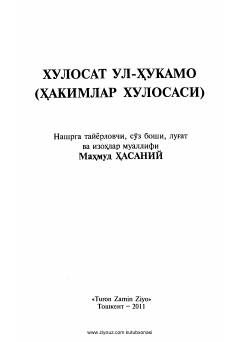

XUQadimiy tibbiy qo'lyozmalar asosida tayyorlangan hakimlar va tabobat haqidagi asar.
Ushbu asar Bag'doddagi 'Bayt ul-hikma' akademiyasi asoschisi xalifa Ma'mun ar-Rashid davrida yozilgan qadimiy tibbiy qo'lyozmaning o'zbek tilidagi nashridir. Kitobda tabobatga oid muhim xulosalar va hakimlar o'gitlari jamlangan bo'lib, u Buxoro xoni Abulfayzxon davridagi turkiy tarjima asosida tayyorlangan.